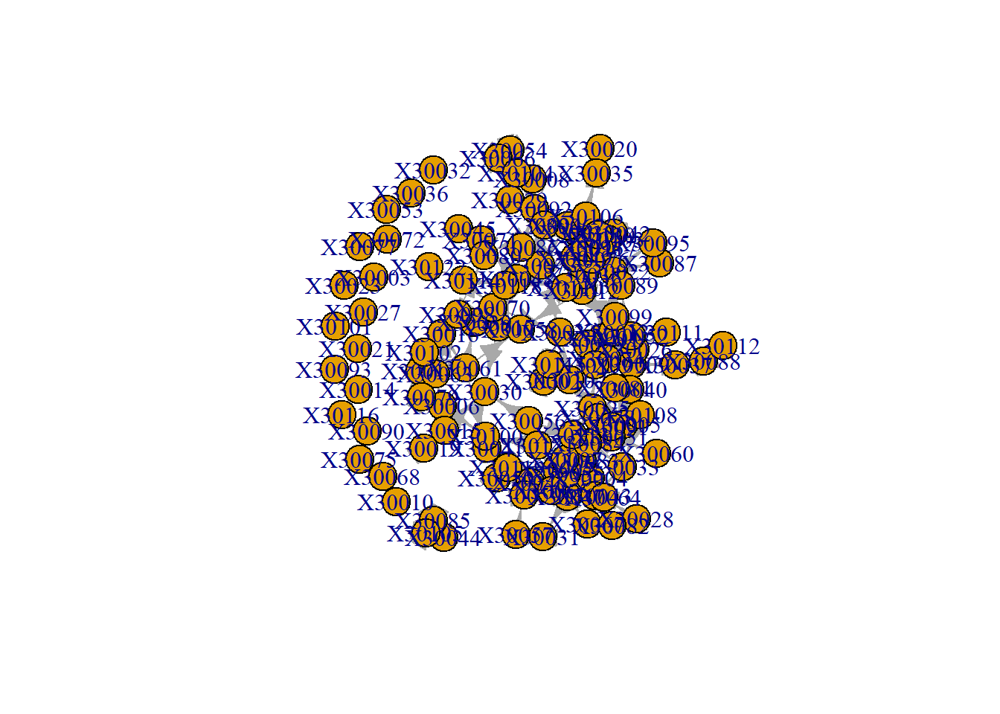
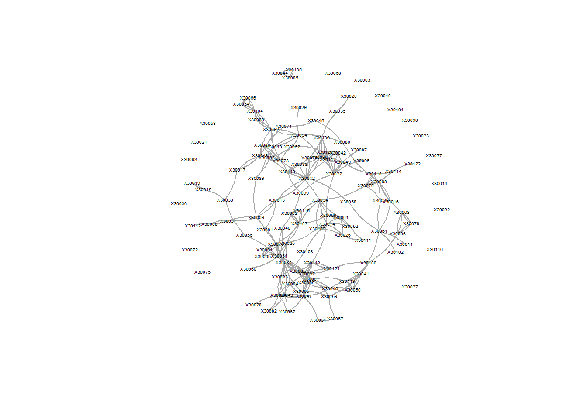
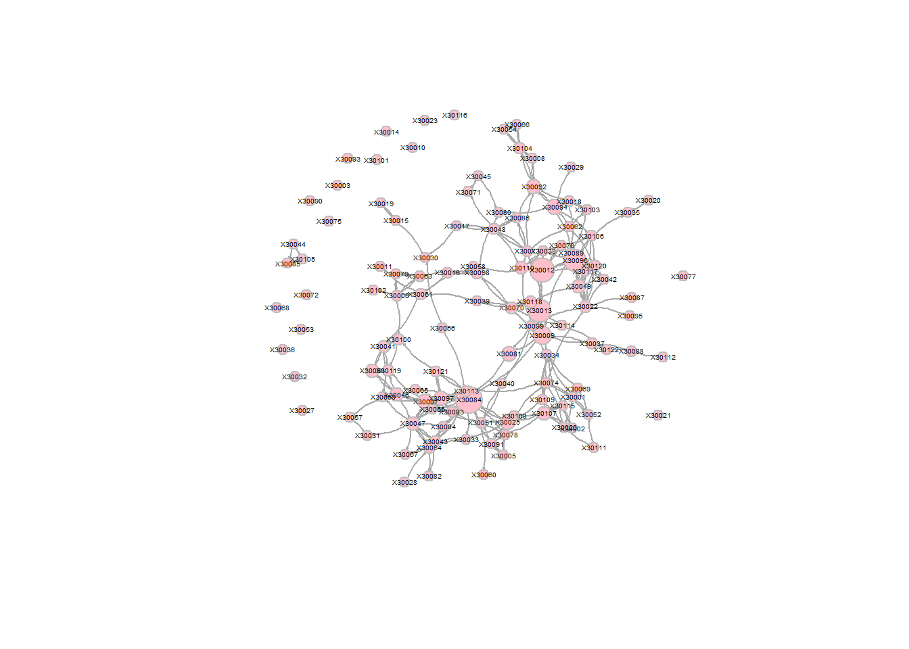

Week 4
Lauren Dirix
1 Preparation before class
1.1 Adjusting my research questions
Based on the discussions last week, I think I will keep my research questions the same. Thus my research questions are: 1. Are students who are connected to each other more similar with regards to civic engagement, than students who are not connected to each other? 2. Do students become more similar to each other with regards to civic engagement, when they are connected in a network?
1.2 What data do I need?
Here I will further describe the data that I need to answer my research questions. The items I chose last week, still seem like the best choice to me for measuring the concepts, I will just go into them a bit more deeply this week, answering what level data the items measure.
Civic engagement
For civic engagement, the questionnaire measures both beliefs and behaviour. I am most interested in behaviour, so I will be using that scale from now on. This scale consists of six items, each measuring a different civic behaviour. This is a measure on an individual, actor level. This is a dynamic measure, it can change over time, which is why it is interesting whether it changes because of the ties people have.
Strong/ weak ties
The measure for both strong and weak ties, are inherently dyadic data, as you cannot have a tie on your own. The questions asked in the MRCS dataset ask for directed ties, as the question is about whether actor A friends (or study partners) with actor B, however, it is possible that actor B does not nominate actor A, leading to a directed tie.
Covariates
Last week I did not look into covariates that should be considered, but the dataset contains all the ‘standard’ covariates, that would be important to control for: - Gender (RXge) - Ethnicity (RXreth) - What year of college (Rfrstyr) These are all variables measured at the individual level, with the first two being stable characteristics, and the last one being dynamic.
2 In class
2.1 SNASS tutorial
require("igraph")
g <- make_graph("Zachary")
plot(g)
Visually, this isn’t the same graph as in the tutorial, but the ties are the same, and the centre is relatively the same. Apparently, the figure is made to put the ‘popular’ people in the centre. Based on this, we can say something about network size, the fact that the ties are undirected (but is that igraph, or the data that is undirected –> check matrix).
gmat <- as_adjacency_matrix(g, type = "both", sparse = FALSE)
# gmat
isSymmetric(gmat)## [1] TRUEBased on the matrix, there are undirected ties, because it is symmetric. You can also check this with isSymemetric, if that is true, there is an undirected network.
2.1.1 Descriptive statistics
Transitivity
# be aware that directed graphs are considered as undirected. but g is undirected.
igraph::transitivity(g, type = c("localundirected"), isolates = c("NaN", "zero"))## [1] 0.1500000 0.3333333 0.2444444 0.6666667 0.6666667 0.5000000 0.5000000 1.0000000 0.5000000
## [10] 0.0000000 0.6666667 NaN 1.0000000 0.6000000 1.0000000 1.0000000 1.0000000 1.0000000
## [19] 1.0000000 0.3333333 1.0000000 1.0000000 1.0000000 0.4000000 0.3333333 0.3333333 1.0000000
## [28] 0.1666667 0.3333333 0.6666667 0.5000000 0.2000000 0.1969697 0.1102941There is not one actor who is specifically very unique in their amount of transitive ties, thus doesnt seem to be that interesting of a statistic
Betweenness
igraph::betweenness(g, directed = FALSE)## [1] 231.0714286 28.4785714 75.8507937 6.2880952 0.3333333 15.8333333 15.8333333 0.0000000
## [9] 29.5293651 0.4476190 0.3333333 0.0000000 0.0000000 24.2158730 0.0000000 0.0000000
## [17] 0.0000000 0.0000000 0.0000000 17.1468254 0.0000000 0.0000000 0.0000000 9.3000000
## [25] 1.1666667 2.0277778 0.0000000 11.7920635 0.9476190 1.5428571 7.6095238 73.0095238
## [33] 76.6904762 160.5515873This shows that number 1 and number 34 have very high number, in the plot you do not see that (big) difference between 33 and 34, thus we need to recreate the plot. It seems like 1, 3, 32, 33, and 34 are interesting, as they have large numbers.
How can we plot that?
Colour code –> upalate to show the brighter the colour the more betweenness
Size increase –> Size nodes dependent on betweenness
Layout broader –> No overlapping nodes
2.1.2 Dyad census
igraph::dyad_census(g)## Warning: `dyad_census()` requires a directed graph.## $mut
## [1] 78
##
## $asym
## [1] 0
##
## $null
## [1] 483Because it is an undirected graph, the asymmetry is always 0
2.1.3 Triad census
igraph::triad_census(g)## Warning in triad_census_impl(graph = graph): Triad census called on an undirected graph. All connections will be treated as mutual.
## Source: misc/motifs.c:1157## [1] 3971 0 1575 0 0 0 0 0 0 0 393 0 0 0 0 45# I will use sna because it shows the names of the triads as well.
sna::triad.census(gmat)## 003 012 102 021D 021U 021C 111D 111U 030T 030C 201 120D 120U 120C 210 300
## [1,] 3971 0 1575 0 0 0 0 0 0 0 393 0 0 0 0 45unloadNamespace("sna") #I will detach this package again, otherwise it will interfere with all kind of functions from igraph, and my students will hate me for that.This shows per sort of triad, how many times it is existent in the network
How many ways there are to close a triad, is calculated through an actor perspective –> If there is a triad, there are three ways to be a triad, from each actor one
Transitivity: How many triads are closed divided by the amount of triads that are closed or can be closed OR how many 300 networks are there, divided by 300 + 201 networks (because only 201 can be closed) This same goes for reciprocity (on dyad level), which cannot be done on this network, because it has undirected ties
Local transitivity: The transitivity of one ego –> shows you how many transitive ties one ego has Can tell you something about how two people with the same amount of ties, differ in their network structure
# Caluclating transitivity in an r-function
igraph::transitivity(g, type = "global")## [1] 0.2556818# Or
sna::gtrans(gmat)## [1] 0.2556818# Calculating transitivity manually
triad_g <- data.frame(sna::triad.census(gmat))
transitivity_g <- (3 * triad_g$X300)/(triad_g$X201 + 3 * triad_g$X300)
transitivity_g## [1] 0.25568182.1.4 Network visualisation
# changing V
V(g)$size = betweenness(g, normalized = T, directed = FALSE) * 60 + 10 #after some trial and error
plot(g, mode = "undirected")
Meaning of the different parts of the codes:
V = virtuses (the nodes)
E = edges
*60 = betweenness score is between 0 and 1, needs to be more heavily taken into account
+10 = if you don’t do that, nodes with a betweenness of 0 will also be visualised with 0, which would be undesirable
set.seed(2345)
l <- layout_with_mds(g) #https://igraph.org/r/doc/layout_with_mds.html
plot(g, layout = l)
l #let us take a look at the coordinates## [,1] [,2]
## [1,] 1.070931935 -0.172458113
## [2,] 0.732844464 0.754023309
## [3,] 0.100582299 0.397693607
## [4,] 0.708246655 0.570205545
## [5,] 1.816293170 -0.120778206
## [6,] 1.881329566 -0.135518854
## [7,] 1.881329566 -0.135518854
## [8,] 0.812606714 0.472619437
## [9,] -0.003769996 0.615513628
## [10,] -0.685680315 0.621065149
## [11,] 1.816293170 -0.120778206
## [12,] 1.621247830 -0.065820692
## [13,] 1.637845123 0.001789972
## [14,] 0.067317230 0.681421148
## [15,] -1.796316404 0.351417630
## [16,] -1.796316404 0.351417630
## [17,] 2.775260452 -0.124317652
## [18,] 1.616210024 0.182510197
## [19,] -1.796316404 0.351417630
## [20,] 0.048362858 0.566654982
## [21,] -1.796316404 0.351417630
## [22,] 1.616210024 0.182510197
## [23,] -1.796316404 0.351417630
## [24,] -1.891240567 -0.799574907
## [25,] -0.258345165 -2.006346563
## [26,] -0.360530857 -2.131642875
## [27,] -1.865177401 0.128596564
## [28,] -0.760226022 -0.529392331
## [29,] -0.710979936 -0.299960128
## [30,] -1.898426916 -0.149398746
## [31,] -0.568691923 0.804189411
## [32,] -0.048136037 -0.870967614
## [33,] -1.023681000 -0.035802363
## [34,] -1.146442924 -0.037605192l[1, 1] <- 4
l[34, 1] <- -3.5
plot(g, layout = l) This is the same network, but the second one looks/ feels a lot
different (seems to suggest way more polarisation, where 1 and 34 are
polar opposites) For the second one, we manipulated the graph manually,
if you do this, be honest about it!!! BUT this is the same as the
algorithm does, which is something that is generally accepted, which is
kind of odd. Solution: Maybe mention what algorithm you used (and why?)
–> graphs aren’t neutral
This is the same network, but the second one looks/ feels a lot
different (seems to suggest way more polarisation, where 1 and 34 are
polar opposites) For the second one, we manipulated the graph manually,
if you do this, be honest about it!!! BUT this is the same as the
algorithm does, which is something that is generally accepted, which is
kind of odd. Solution: Maybe mention what algorithm you used (and why?)
–> graphs aren’t neutral
3 Trying on my own
Load in data
packages = c("stringdist", "stringi", "tidyverse")
fpackage.check(packages)## [[1]]
## NULL
##
## [[2]]
## NULL
##
## [[3]]
## NULLload("./data/IndividualCharacteristics.RData")
load("./data/NetworkCharacteristics.RData")3.1 Variables of interest
3.1.1 Network matrix (weak ties)
Create a matrix, that can be used within RSiena. I set all values 9 to NA, as these respondents have not filled out the survey
# view(studying[[1]])
studying_df_t1 <- as.data.frame(studying[[1]][1])
class(studying_df_t1)## [1] "data.frame"# view(studying_df_t1)
weak_netw_t1 <- data.matrix(studying_df_t1)
weak_netw_t1[weak_netw_t1==9]<-NA
class(weak_netw_t1)## [1] "matrix" "array"# view(weak_netw_t1)
studying_df_t2 <- as.data.frame(studying[[1]][2])
class(studying_df_t2)## [1] "data.frame"# view(studying_df_t2)
weak_netw_t2 <- data.matrix(studying_df_t2)
weak_netw_t2[weak_netw_t2==9]<-NA
class(weak_netw_t2)## [1] "matrix" "array"# view(weak_netw_t2)3.1.2 Network matrix (strong ties)
# view(hanging[[1]])
hanging_df_t1 <- as.data.frame(hanging[[1]][1])
class(hanging_df_t1)## [1] "data.frame"# view(hanging_df_t1)
strong_netw_t1 <- data.matrix(hanging_df_t1)
strong_netw_t1[strong_netw_t1==9]<-NA
class(strong_netw_t1)## [1] "matrix" "array"# view(strong_netw_t1)
hanging_df_t2 <- as.data.frame(hanging[[1]][2])
class(hanging_df_t2)## [1] "data.frame"# view(hanging_df_t2)
strong_netw_t2 <- data.matrix(hanging_df_t2)
strong_netw_t2[strong_netw_t2==9]<-NA
class(strong_netw_t2)## [1] "matrix" "array"# view(strong_netw_t2)3.1.3 Covariates (gender, ethnicity)
gender_df <- as.data.frame(gender)
ethnicity_df <- as.data.frame(ethnic)
ind_mat <- data.matrix(cbind(gender_df, ethnicity_df))
class(ind_mat)## [1] "matrix" "array"# view(ind_mat)3.2 Visualisation
require(igraph)
copy_strong_netw_t2 <- strong_netw_t2
copy_strong_netw_t2[is.na(copy_strong_netw_t2)] <- 0
g_strong_t2 <- igraph:: graph_from_adjacency_matrix(copy_strong_netw_t2, mode = "directed")
plot(g_strong_t2)
3.3 Explanation of NA’s with fake data
test_m <- matrix(NA, nrow = 4, ncol = 4)
test_m[1,1] <- 0
test_m[1,2] <- 1
test_m[1,4] <- 1
test_m[3,1] <- 0
test_m[3,2] <- 1
test_m[3,4] <- 1
test_m[4,1] <- 0
test_m[4,2] <- 1
test_m[4,4] <- 0
view(test_m)For plotting what you do with missing data differs from how you deal with NA’s than for RSiena
If someone isnt there in both the row and the column, you want them gone from your data
misrow <- rowSums(is.na(test_m)) == nrow(test_m)
miscol <- colSums(is.na(test_m)) == nrow(test_m)
miss <- which(misrow & miscol) #Checken waar zowel de collumn als de rows missings zijn
miss## integer(0)which(misrow) #Tells you which row has missing values## [1] 2test_m[which(misrow), ] <- 04 Webscraping
install.packages("xml2")
require(xml2)
install.packages("rvest")
require(rvest)Trying to save data from a nos article Saving the href
url <- "https://nos.nl/zoeken?q=Jochem+Tolsma&page=1"
nos <- read_html(url)
nos # It is a html document
lijst <- nos %>% html_elements("main") %>%
html_elements("ul") %>%
html_elements("li")
lijst[1] #shows that you can select just one of the loaded lists
# Keep digging deeper into these lists, until you reach the desired depth/ information (in this case the date)
# The href should be in the object under lijst 1
lijst[1] %>% html_children %>% html_attr(name = "href")
#Copy x-path, to lead R to the right place, on the right page
# //*[@id="content"]/div[2]
#Copy full x-path
# /html/body/div/main/div[2]Saving the date
# By myself
time_num <- lijst[1] %>% html_children %>% html_children %>% .[2] %>% html_children %>% .[2] %>% html_children %>% html_children %>% html_attr(name = "datetime")
time_num
#.[2] --> selects the second list in the objects that are under the object that are under lijst 1
time_char <- lijst[1] %>% html_children %>% html_children %>% .[2] %>% html_children %>% .[2] %>% html_children %>% html_children %>% html_text
time_char
# In class
lijst[1] %>% html_element("time") %>% html_attr(name = "datetime")
lijst[1] %>% html_element("time") %>% html_text5 Trying on my own (again)
5.1 Descriptive statistics
vcount(g_strong_t2)## [1] 121ecount(g_strong_t2)## [1] 270pretty_graph <- simplify(g_strong_t2)
pretty_graph <- g_strong_t2
plot(pretty_graph)
plot(pretty_graph,
vertex.color = "pink", # nice color for the vertices
vertex.size = 10, # we'll vertices a bit smaller
vertex.frame.color = "gray", # we'll put a gray frame around vertices
vertex.label.color = "black", # not that ugly blue color for the labels (names)
vertex.label.family = "Helvetica", # not a fan of times new roman in figures
vertex.label.cex = 0.3, # make the label a bit smaller too
vertex.label.dist = 0.5, # we'll pull the labels a bit away from the vertices
edge.curved = 0.2, # curved edges is always a nice touch
edge.arrow.size = 0.075, # make arrow size (direction of edge) smaller
margin = 0.01,
rescale = FALSE, ylim = c(-9,9))## Warning in text.default(x0, y0, labels = lbl, col = col, family = fam, font = fnt, : font family
## not found in Windows font database
Giving gender different colours
gender1 <- gender[[1]][,1]
gender2 <- gender[[1]][,2]
gender_test <- coalesce(gender1, gender2)
head(gender_test)## 30001 30002 30003 30004 30005 30006
## 2 2 1 2 1 2hangingw2_nona <- na_if(hanging[[1]][[2]], 9)
#checking if one misses in rows
rowhangingw2 <- rowSums(is.na(hangingw2_nona)) == nrow(hangingw2_nona)
#checking if one misses in cols
colhangingw2 <- colSums(is.na(hangingw2_nona)) == ncol(hangingw2_nona)
hangingw2_nona[which(rowhangingw2) , ] <- 0
igraph::betweenness(pretty_graph, directed = TRUE)## X30001 X30002 X30003 X30004 X30005 X30006 X30007 X30008
## 1.000000 0.000000 0.000000 0.000000 3.500000 52.000000 391.184921 0.000000
## X30009 X30010 X30011 X30012 X30013 X30014 X30015 X30016
## 577.538889 0.000000 0.000000 983.977778 890.077778 0.000000 1.000000 79.422222
## X30017 X30018 X30019 X30020 X30021 X30022 X30023 X30025
## 3.000000 73.500000 0.000000 0.000000 0.000000 139.500000 0.000000 340.385714
## X30026 X30027 X30028 X30029 X30030 X30031 X30032 X30033
## 0.000000 0.000000 0.000000 0.000000 0.000000 0.000000 0.000000 0.000000
## X30034 X30035 X30036 X30037 X30038 X30039 X30040 X30041
## 0.000000 0.000000 0.000000 129.000000 13.500000 0.000000 29.000000 152.190079
## X30042 X30043 X30044 X30045 X30046 X30047 X30048 X30049
## 0.000000 79.339683 0.000000 0.000000 265.630556 233.002381 85.950000 232.994444
## X30050 X30051 X30052 X30053 X30054 X30055 X30056 X30057
## 249.874603 74.928571 0.000000 0.000000 0.000000 0.000000 0.000000 0.000000
## X30058 X30059 X30060 X30061 X30062 X30063 X30064 X30065
## 0.000000 0.000000 0.000000 102.422222 29.533333 62.000000 105.339683 0.000000
## X30066 X30067 X30068 X30069 X30070 X30071 X30072 X30073
## 0.000000 0.000000 0.000000 0.000000 142.088889 0.000000 0.000000 48.983333
## X30074 X30075 X30076 X30077 X30078 X30079 X30080 X30081
## 80.900000 0.000000 18.500000 0.000000 0.000000 0.000000 0.000000 347.538889
## X30082 X30083 X30084 X30085 X30086 X30087 X30088 X30089
## 0.000000 13.852381 1164.787302 0.000000 10.000000 0.000000 47.000000 0.000000
## X30090 X30091 X30092 X30093 X30094 X30095 X30096 X30097
## 0.000000 3.285714 275.483333 0.000000 390.483333 0.000000 827.777778 314.206349
## X30098 X30099 X30100 X30101 X30102 X30103 X30104 X30105
## 157.422222 0.000000 100.619048 0.000000 0.000000 14.666667 132.000000 0.000000
## X30106 X30107 X30108 X30109 X30110 X30111 X30112 X30113
## 50.116667 248.500000 0.000000 9.000000 209.400000 0.000000 0.000000 54.119048
## X30114 X30115 X30116 X30117 X30118 X30119 X30120 X30121
## 0.000000 0.500000 0.000000 37.416667 171.300000 88.476190 88.950000 84.833333
## X30122
## 0.000000V(pretty_graph)$size = betweenness(pretty_graph, normalized = T, directed = TRUE) * 100 + 10
pretty_graph_t2 <- igraph::graph_from_adjacency_matrix(hangingw2_nona, mode = "directed", weighted = NULL, diag = TRUE, add.colnames = NA,
add.rownames = NA)
kleurtje <- ifelse(gender_test==2, "orange", "purple")
plot(pretty_graph_t2,
vertex.color = kleurtje, # nice color for the vertices
vertex.size = 5, # we'll vertices a bit smaller
vertex.frame.color = "gray", # we'll put a gray frame around vertices
vertex.label.color = "black", # not that ugly blue color for the labels (names)
vertex.label.cex = 0.5, # make the label a bit smaller too
vertex.label.dist = 0.9, # we'll pull the labels a bit away from the vertices
edge.curved = 0.2, # curved edges is always a nice touch
edge.arrow.size = 0.1)
pretty_graph_t2## IGRAPH ef47311 D--- 121 270 --
## + edges from ef47311:
## [1] 1-> 25 1-> 33 1-> 51 2->106 2->114 5-> 24 5-> 50 5-> 77 5-> 90 6-> 62 6-> 78
## [12] 6-> 99 7-> 45 7-> 46 7-> 54 7-> 58 7-> 83 7-> 96 7->118 8-> 91 8->103 9-> 13
## [23] 9-> 36 9-> 80 9-> 83 9-> 88 12-> 13 12-> 37 12-> 57 12-> 75 12-> 95 12->109 12->116
## [34] 13-> 9 13-> 12 13-> 80 15-> 19 15-> 29 16-> 60 16-> 97 17-> 29 17-> 47 18-> 88 18-> 91
## [45] 18-> 93 18->102 19-> 15 20-> 34 22-> 41 22-> 48 22-> 86 22-> 94 22->116 22->119 24-> 77
## [56] 24-> 83 24->106 27-> 63 36-> 9 36-> 87 37->109 39-> 50 40-> 49 40-> 58 40->118 42-> 4
## [67] 42-> 32 42-> 46 42-> 63 42-> 66 42-> 81 43-> 84 43->104 44-> 70 44-> 79 45-> 7 45-> 46
## [78] 45-> 49 45-> 54 45->118 46-> 4 46-> 7 46-> 30 46-> 42 46-> 54 46-> 58 46-> 63 46-> 66
## [89] 46-> 96 47-> 17 47-> 70 47-> 72 47-> 85 47->109 48-> 22 48-> 41 48-> 95 48->116 48->119
## + ... omitted several edgesTrying to change node size based on degree
V(pretty_graph)$size = betweenness(pretty_graph, normalized = T, directed = T) * 1000 + 50
plot(pretty_graph,
vertex.color = "pink",
vertex.frame.color = "gray",
vertex.label.color = "black",
vertex.label.family = "Helvetica",
vertex.label.cex = 0.3,
vertex.label.dist = 0.5,
edge.curved = 0.2,
edge.arrow.size = 0.075,
margin = 0.01,
rescale = FALSE, ylim = c(-9,9))## Warning in text.default(x0, y0, labels = lbl, col = col, family = fam, font = fnt, : font family
## not found in Windows font database
V(pretty_graph)$color = betweenness(pretty_graph, normalized = T, directed = T) * 1000 + 50
plot(pretty_graph,
vertex.size = 100,
vertex.frame.color = "gray",
vertex.label.color = "black",
vertex.label.family = "Helvetica",
vertex.label.cex = 0.3,
vertex.label.dist = 0.5,
edge.curved = 0.2,
edge.arrow.size = 0.075,
margin = 0.01,
rescale = FALSE, ylim = c(-9,9))## Warning in text.default(x0, y0, labels = lbl, col = col, family = fam, font = fnt, : font family
## not found in Windows font database